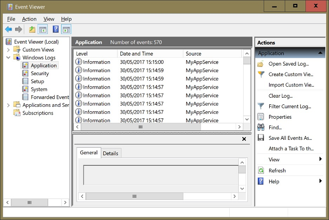

Now that we have managed to establish MyApp as a Windows Service we need to ensure it behaves. We shall make it report to the Windows Event Log.
The Windows Event Log is by no means an alternative to application-specific log files. Most ordinary applications do not write to the Windows Event Log at all, some do only when things go wrong, and a very few, always.
In other words, for ordinary applications you may or may not find useful information in the Windows Event Log.
In contrast, an application that runs as a Windows Service is expected to write to the Windows Event Log when it starts, when it quits and when it encounters problems, and it might add even more information. There are few exceptions.
Similarly, Scheduled Tasks are expected to do the same, although some don't, or report only errors.
On a server, all applications run either as Windows Services (most likely all of them) or as Windows Scheduled Tasks. Since no human is sitting in front of a server we need a way to detect problems on servers automatically.
That can be achieved by using software that constantly scans the Windows Event Log. It can email or text admins when an application that's supposed to run doesn't, or when an application goes astray, drawing attention to that server.
In large companies, which usually manage many servers, it is common to use software that checks the Windows Event Logs of all those servers.
So yes, the Windows Event Log is indeed important. Really important.
In modern versions of Windows you just press the Win key and type Event. That brings up a list which contains at least Event Viewer.
By default, the Event Viewer displays all Event Logs on the current (local) machine. However, you can connect to another computer and investigate its Event Log, if you have the right permissions. Here we keep it simple, and focus just on the local Windows Event Log.
From the Microsoft documentation:
Each log in the Eventlog key contains subkeys called event sources. The event source is the name of the software that logs the event. It is often the name of the application or the name of a subcomponent of the application if the application is large.
You can add a maximum of 16,384 event sources to the registry. The Security log is for system use only. Device drivers should add their names to the System log. Applications and services should add their names to the Application log or create a custom log.[1]
The great majority of applications that write to the Windows Event Log write into Windows Logs\Application, but if you wish you can create your own log under Applications and services logs.
For creating a custom log you need admin rights. So creating a custom log is something usually done by the installer for your software, since it needs admin rights by definition anyway.
We keep it simple here, and write to the Application log.
Copy Z:\code\v13 to Z:\code\v14.
Note that any attempt to write to the Windows Event Log with the WindowsEventLog class requires the Dyalog .NET bridge to be a sibling of the EXE, be it the Dyalog EXE or a custom stand-alone EXE.
We are going to make MyApp write to the Windows Event Log only when it runs as a Service. Therefore we need to load the class WindowsEventLog from within MakeService.dyapp (but not MyApp.dyapp):
...
Load ..\AplTree\OS
Load ..\AplTree\WindowsEventLog
Load ..\AplTree\Logger
...We need to add to the INI a flag that allows us to toggle writing to the Window Event Log:
...
[Ride]
Active = 0
Port = 4599
wait = 1
[WindowsEventLog]
write = 1 ; Has an affect only when it's running as a Service
Why would this be useful? During development, when you run the Service to see what it's doing, you might not want the application to write to your Windows Event Log, for example.
We modify the MyApp.CreateConfig function so that it creates Config.WriteToWindowsEventLog from that INI entry:
∇ Config←CreateConfig isService;myIni;iniFilename
...
:If isService
Config.WatchFolders←⊃myIni.Get'Folders:Watch'
Config.WriteToWindowsEventLog←myIni.Get'WINDOWSEVENTLOG:write'
:Else
Config.LogFolder←'expand'F.NormalizePath⊃Config.LogFolder myIni.Get'Folders:Logs'
Config.WriteToWindowsEventLog←0
:EndIf
...
∇
For logging we introduce two new functions, Log and LogError. First Log:
∇ {r}←{both}Log msg
⍝ Writes to the application's log file only by default.
⍝ By specifying 'both' as left argument one can force the fns to write
⍝ `msg` also to the Windows Event Log if Config.WriteToWindowsEventLog.
r←⍬
both←(⊂{0<⎕NC ⍵:⍎⍵ ⋄ ''}'both')∊'both' 1
:If 0<⎕NC'MyLogger'
MyLogger.Log msg
:EndIf
:If both
:AndIf Config.WriteToWindowsEventLog
:Trap 0 ⍝ Don't allow logging to break!
MyWinEventLog.WriteInfo msg
:Else
MyLogger.LogError'Writing to the Windows Event Log failed for:'
MyLogger.LogError msg
:EndTrap
:EndIf
∇Note that this function always writes to the application's log file. By specifying 'both' as left argument one can get the function to also write to the Windows Event Log, given that Config.WriteToWindowsEventLog is true.
That allows us to use Log for logging all events but errors, and to specify 'both' as left argument when we want the function to record the Service starting, pausing and stopping. In other words, all calls to MyLogger.Log will be replaced by Log, although some calls require 'both' to be passed as the left argument.
We also introduce a function LogError:
∇ {r}←LogError(rc msg)
⍝ Write to **both** the application's log file and the Windows Event Log.
MyLogger.LogError msg
:If Config.WriteToWindowsEventLog
:Trap 0
MyWinEventLog.WriteError msg
:Else
MyLogger.LogError'Could not write to the Windows Event Log:'
MyLogger.LogError msg
:EndTrap
:EndIf
∇Note that the Logger class traps any errors that occur. The WindowsEventClass does not do this, and the calls to WriteInfo and WriteError might fail for all sorts of reasons: invalid data type, invalid depth, lack of rights – you name it.
Therefore both Log and LogError trap any errors and write to the log file in case something goes wrong. Note also that in this particular case it's okay to trap all possible errors (0) because we cannot possibly foresee what might go wrong. In a real-world application you still want to be able to switch this kind of error trapping off via an INI entry etc.
In the case of an error we now want the function LogError to be called, so we change SetTrap accordingly:
∇ trap←{force}SetTrap Config
...
#.ErrorParms.returnCode←EXIT.APPLICATION_CRASHED
#.ErrorParms.(logFunctionParent logFunction)←⎕THIS'LogError'
#.ErrorParms.windowsEventSource←'MyApp'
...
∇Now it's time to replace the call to MyLogger.Log by a call to Log in the MyApp class; use the replace feature of the editor in order to achieve that.
There are however three functions where we need to add 'both' as left argument:
∇ {r}←MainLoop dummy;S
r←⍬
'both'Log'"MyApp" server started'
S←#.ServiceState
:Repeat
LoopOverFolder ⍬
:If ('both'∘Log S.CheckServiceMessages)S.IsRunningAsService
'both'Log'"MyApp" is about to shut down...'
:Leave
:EndIf
⎕DL 2
:Until 0
⍝Done
∇Note that use the compose (∘) operator here: only by ‘gluing’ the left argument ('both') to the function name with the compose operator can we ensure everything's passed to the Log function is written not only to the log file but also to the Windows Event Log when ServiceState is managing the communication between the SCM and the application.
The second function to be changed is Off:
∇ Off exitCode
:If exitCode=EXIT.OK
'both'Log'Shutting down MyApp'
:ElseNow we change Initial: if the application is running as a service we let Initial create an instance of WindowsEventLog and return it as part of the result.
leanpub-start-insert
∇ r←Initial isService;parms;Config;MyLogger;MyWinEventLog
⍝ Prepares the application.
Config←CreateConfig isService
Config.ControlFileTieNo←CheckForOtherInstances ⍬
CheckForRide(0≠Config.Ride)Config.Ride
MyLogger←OpenLogFile Config.LogFolder
Log'Started MyApp in ',F.PWD
Log 2 ⎕NQ'#' 'GetCommandLine'
Log↓⎕FMT Config.∆List
r←Config MyLogger
:If isService
MyWinEventLog←⎕NEW #.WindowsEventLog(,⊂'MyAppService')
parms←#.ServiceState.CreateParmSpace
parms.logFunction←'Log'
parms.logFunctionParent←⎕THIS
#.ServiceState.Init parms
r,←MyWinEventLog
:EndIf
∇Initial is called by RunAsService and StartFromCmdLine, but because the result of Initial remains unchanged if the application is not running as a Service we need to amend just RunAsService.
We localise MyWinEventLog (the name of the instance) and change the call to Initial since it now returns a three-item vector:
leanpub-start-insert
∇ {r}←RunAsService(earlyRide ridePort);⎕TRAP;MyLogger;Config;∆FileHashes;MyWinEventLog
⍝ Main function when app is running as a Windows Service.
...
⎕TRAP←#.HandleError.SetTrap ⍬
(Config MyLogger MyWinEventLog)←Initial 1
⎕TRAP←(Config.Debug=0)SetTrap Config
...
∇Having made all these changes we should check whether the basics still work:
- Double-click
Make.batin order to re-compile the EXE. - Double-click
MyApp.dyapp. This assembles the workspace, including the test cases. - Answer with
ythe question whether all test cases shall be executed.
Ideally the test cases should pass.
Now it's time to run the test cases for the Service:
- Open a console window with admin rights.
- Navigate to the
v13\folder. - Call
MakeService.dyapp. - Execute
TestsForServices.GetHelpers. - Call
TestsForServices.RunDebug 0.
Now start the Event Viewer; you should see something like this:

You might need to scroll down a bit.
We shall add a test case that checks whether the new logging feature works. For that we introduce Test_03:
∇ R←Test_03(stopFlag batchFlag);⎕TRAP;MyWinLog;noOfRecords;more;rc;records;buff
⍝ Start & stop the service, then check the Windows Event Log.
⎕TRAP←(999 'C' '. ⍝ Deliberate error')(0 'N')
R←∆Failed
MyWinLog←⎕NEW #.WindowsEventLog(,⊂'MyAppService')
noOfRecords←MyWinLog.NumberOfLogEntries
(rc more)←∆Execute_SC_Cmd'start'
→FailsIf 0≠rc
∆Pause 1
(rc more)←∆Execute_SC_Cmd'query'
→FailsIf 0=∨/'STATE : 4 RUNNING'⍷#.APLTreeUtils.dmb more
∆Pause 2
(rc more)←∆Execute_SC_Cmd'stop'
→FailsIf 0≠rc
∆Pause 2
records←(noOfRecords-10)+⍳(MyWinLog.NumberOfLogEntries+10)-noOfRecords
buff←↑MyWinLog.ReadThese records
→PassesIf∨/,'"MyApp" server started '⍷buff
→PassesIf∨/,'Shutting down MyApp'⍷buff
R←∆OK
∇Notes:
- First we save the number of records currently saved in the Windows Event Log “Application”.
- We then start and stop the server to make sure we get some fresh records written.
- We then read the number of records plus 10 (others write to the Windows Event Log as well) and investigate them.
Feel confident with the Windows Event Log? Well, a few more wrinkles yet:
- When you create a new source in a (new) custom log then in the Registry the new log is listed as expected but it has two keys. One has the name of the source you intended to create; the second has the same name as the log itself. In the Event Viewer however only the former is listed.
- Names of sources must be unique across all logs.
- Only the first 8 characters of the name of a source are really taken into account; everything else is ignored. If you have a source
S1234567_1and try to registerS1234567_2you get an error Source already exists. - The Event Viewer is up and running. You either create or delete a log or a source and press F5. The Event Viewer GUI flickers. You might suppose the GUI just updated itself.
That's not the case, at the time of writing (2017-03). You have to close the Event Viewer and re-open it to actually see your changes.
- Even when your user ID has admin rights and you've started Dyalog in elevated mode (Run as administrator in the context menu) you cannot delete a custom log with calls to
WinRegorWinRegSimple, the APLTree classes that deal with the Windows Registry. The only way to delete custom logs is with the Registry Editor: go to the keyHKEY_LOCAL_MACHINE\SYSTEM\CurrentControlSet\Services\EventLog\and delete the key/s (i.e. children) you want to get rid of. (Probably wise to create a system restore point [2] before you do that.)
Worth following that link and reviewing System Restore Points. Under Windows 10, System Restore Points are no longer generated by default; they need to be switched on explicitly. And they should be.
- Once you have written events to a source and deleted the log the source appears to belong to, the events remain saved anyway. They are just not visible anymore. That can be shown by re-creating the log: all the events appear as they were before.
If you want really to get rid of a log, select the Clear log command from the context menu in the Event Viewer (tree only!) before you delete the log.
- To analyse the content of a log in APL, the instance methods
Read(which reads the whole log) andReadThese(which takes line numbers and reads just those specified) are useful.
Footnotes
Microsoft on the Windows Event Log:
https://msdn.microsoft.com/en-us/library/windows/desktop/aa363648(v=vs.85).aspxDetails about System Restore Point:
https://en.wikipedia.org/wiki/System_Restore